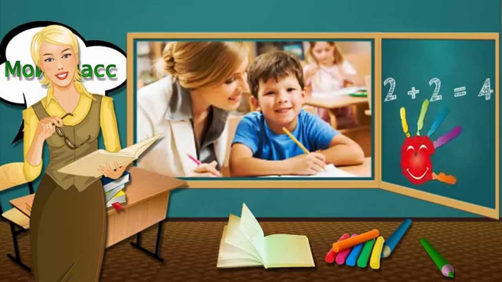

МБОУ НШ №1
Добро пожаловать на официальный сайт школы!
С 1 февраля 2018 года в МБОУ начальной школе №1 начинается прием заявлений в 1-й класс.
Прием заявлений осуществляется при наличии:
оригинала свидетельства о рождении ребенка;
оригинала паспорта одного из родителей (законного представителя);
2 фотографии 3x4.

Добрый день, дорогие друзья!
Начинается новый учебный год и мы рады приветствовать Вас на новом сайте школы.
На нашем сайте Вы можете получить полную информацию о нашем образовательном учреждении, ознакомиться со школьными новостями, задать вопросы администрации.
Начальная школа №1 реализует модель
Школы полного дня.
Это образовательное учреждение, реализующее государственный стандарт основного и дополнительного образования, в который входит комплекс обучающих,
социализирующих и оздоровительных функций, интегрирующих познание, творчество в интересах развития личности, помогающее семье и обществу социально адаптировать.
Наш режим
Школа открыта целый день (с 7.00 до 19.00) и обеспечивает ребенку домашнюю обстановку, уют, эмоциональный комфорт. Пребывание детей организуется с учетом физиологических,
познавательных, творческих, коммуникативных потребностей: учебные занятия в первой половине дня, отдых с максимальным пребыванием на открытом воздухе, динамический час, дневной сон (в школе – в 1 классе),
4-х разовое сбалансированное питание, самостоятельная и совместная с педагогом деятельность детей, самоподготовка, внеурочная деятельность, дополнительное образование, занятия детей по интересам.
Школа полного дня создает более благоприятные по сравнению с общеобразовательной школой условия для самовыражения, самоопределения каждого конкретно обучающегося.
Составленное расписание работы на первую и вторую половину дня позволяет регламентировать учебную и внеучебную деятельности и исключить перегрузку школьников.
Наши кадры
Успешно осваивать образовательные программы, расти и развиваться обучающимся помогает высокий уровень профессиональной компетентности педагогов: воспитатели, учителя начальных классов, учителя-логопеды,
учителя английского языка, музыки, педагоги дополнительного образования.
Мы разные, но такие талантливые
В школе предусматривается определённое время на творческую деятельность детей: работу в кружках, секциях, занятия музыкой, ИЗО, хореографией, иностранным языком, информатикой.
Система обучения и воспитания одаренных и высоко мотивированных детей носит открытый характер - школа принимает активное участие в конкурсах регионального, всероссийского и международного уровней.